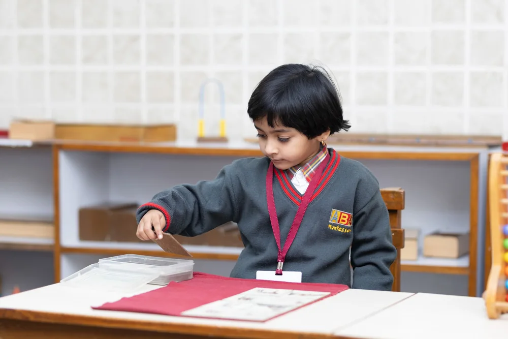
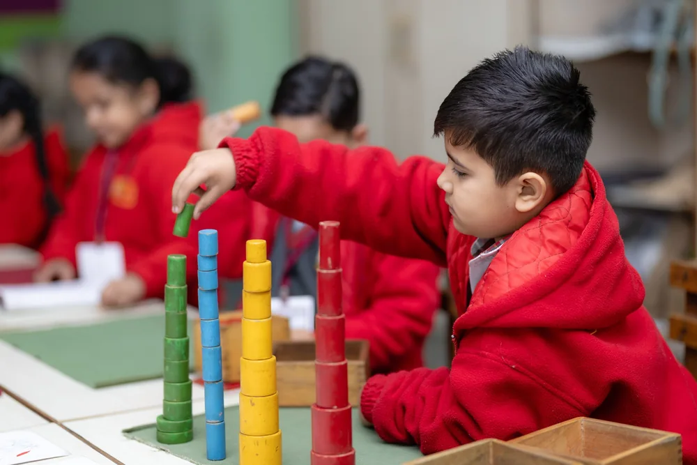
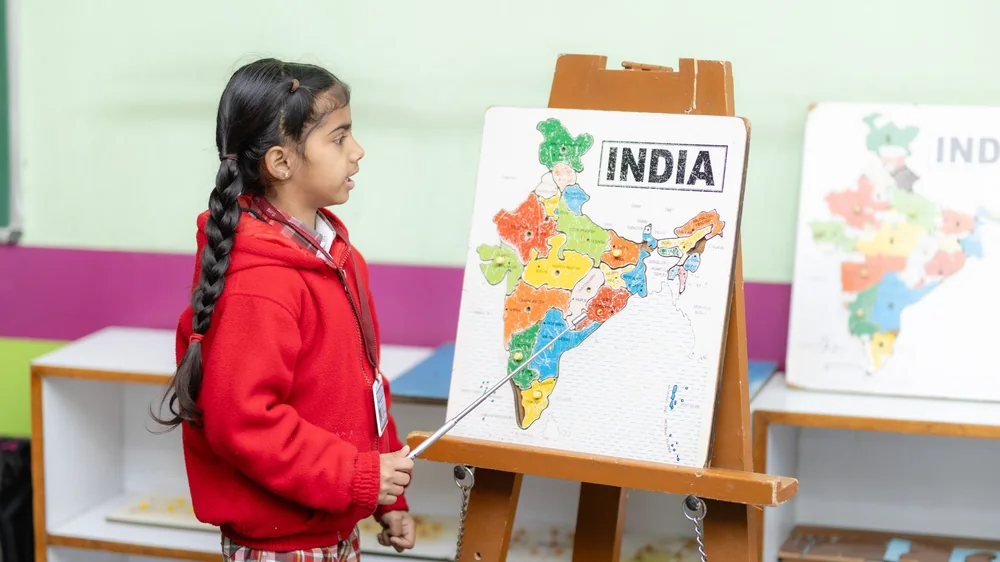
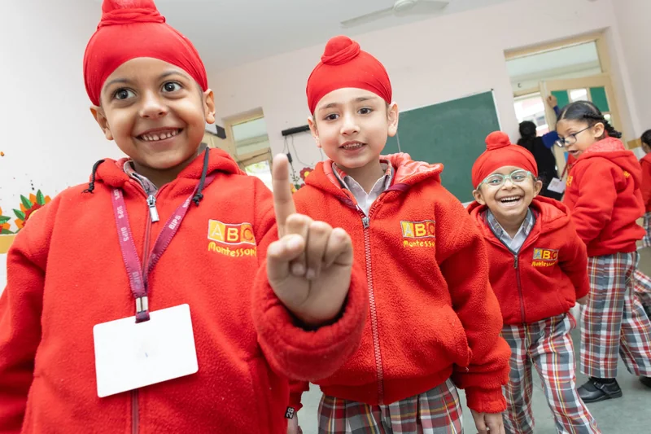
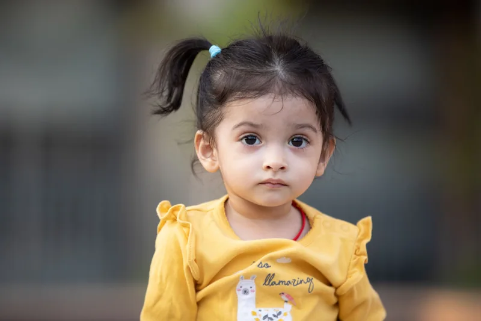
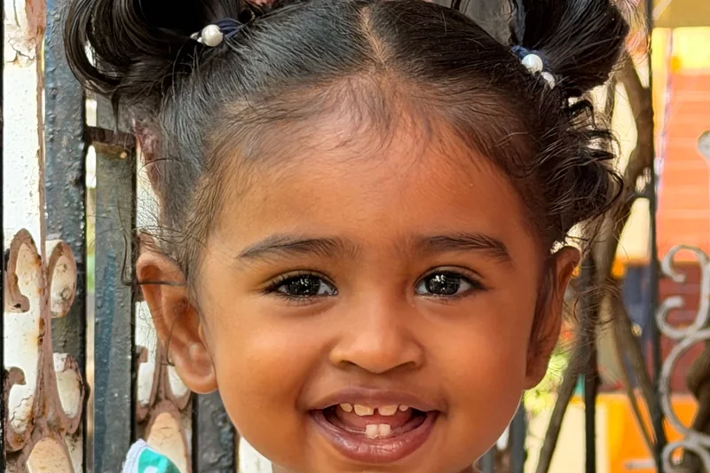
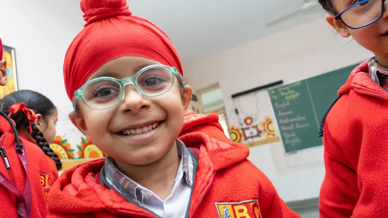

Bopal · Ahmedabad · Since 2011
It starts with one small good morning
Someone at the gate already knows her name — which is most of the trick of a first week.
Visit your nearest centre4.8 average from 312 parent reviews
Admissions open for 2026–27. Campus visits every Saturday, 10 AM to 1 PM.
Bopal · Ahmedabad · Since 2011
Someone at the gate already knows her name — which is most of the trick of a first week.
Visit your nearest centre4.8 average from 312 parent reviews
First, play
Sand, water and a great deal of running. At three, this is how the lesson gets in.
See a day here4.8 average from 312 parent reviews
Then, making
Pouring, buttoning, sweeping, laying a table for six. Practical life, exactly as it sounds.
Explore our programmes4.8 average from 312 parent reviews
And then, letters
Nobody sat her down and taught her to read. She arrived at it herself, on her own morning.
Read our story4.8 average from 312 parent reviews
Admissions 2026–27
Come and watch a Tuesday morning. It is the only honest way to judge a preschool.
Book a campus visit4.8 average from 312 parent reviews
At a glance
Ages 1.5 – 5.5 years
Four stages. Children move up in June, together with their friends.

1.5 – 2.5 yrsSettling in, separating gently, and discovering that school is a happy place. Sensorial trays, water play, rhymes and a great deal of lap-sitting.
Practical life takes over — pouring, buttoning, sweeping, laying out a snack. Language blooms, and so does the first taste of independence.

3.5 – 4.5 yrsSandpaper letters, number rods and the golden beads. Children begin reading without being taught to — and start writing long before they expect to.

4.5 – 5.5 yrsBotany, geography, the microscope table and long projects. By June, children leave able to read, write and sit with a hard problem without giving up.
Extended daycare available until 6:30 PM at all centres, including lunch, nap and an evening snack.
Our promise
It’s the whole point.
We don’t rush children towards Class 1. We give them three unhurried years to build attention, confidence and a genuine appetite for figuring things out — the things that actually carry a child through school and well past it.
Founder & Principal · teaching here since 2011




The daily rhythm
Predictable rhythm, unhurried pace. Children settle fastest when they know what comes next — so the shape of the morning is the same every day, at every centre.
9:00
Each child greeted by name, shoes off, water bottle to the shelf.
9:20
Rhymes, the weather, and who has come to school today.
9:45
Water, sand, dough and texture trays. Messy on purpose.
10:30
Children serve themselves and clear their own plates.
10:50
Free play in the shaded outdoor area, whatever the weather allows.
11:20
One picture book, one song, and off home.
9:00
Children pick their first work straight off the shelf.
9:30
Pouring, spooning, buttoning, polishing — the real work of being three.
10:15
Phonic sounds, picture cards and a great many questions.
10:45
Laid out, eaten and cleared by the children themselves.
11:10
Balance beams, tricycles and the climbing frame.
11:45
Harmonium, clapping songs, then home.
9:00
A protected two-hour block. Children choose, settle and go deep.
10:00
Golden beads, number rods, sandpaper letters, first writing.
10:50
Eaten together at laid tables, with actual table talk.
11:15
Botany, land-and-water forms, the microscope table, maps of India.
12:00
Team games, gardening and the sandpit.
12:40
What we made today, and what we'll pick up tomorrow.
Extended daycare runs to 6:30 PM, with lunch, a nap and quiet play.
Life at Gulmohar
Every day here is an invitation to discover, question, get messy and try again.
Keep scrolling — the train is carrying our week
Our story

Gulmohar began in 2011 in a rented two-room house off Bopal–Ambli Road, with nine children and one very determined teacher. What hasn’t changed since is the belief that a preschool should feel less like a small school and more like a very good home — warm, calm, and full of things worth touching.
Today six Ahmedabad centres follow the same approach: mixed-age classrooms, Montessori materials on open shelves, and teachers who stay long enough to watch a Playgroup child walk out of Senior KG.
— still the same shelves, fourteen years on

Come and see the shelves for yourself.
Read our approachOur educators
Our educators stay an average of six years. You’ll meet all of them on a visit.
22yrs in early years
M.Ed
With Gulmohar since 2011
11yrs in early years
AMI Montessori Diploma
In early years since 2014
8yrs in early years
NTT · Child psychology
In early years since 2017
6yrs in early years
Classical vocal
With us since 2019
Safety & facilities
We’d rather answer these before you have to ask. Every point here is true at all six centres, and you’re welcome to verify any of it on a campus visit.
Schedule a visitEvery classroom and corridor, live on the parent app during school hours.
A 1:8 teacher–child ratio, plus a trained didi in every classroom.
Police verification and reference checks for every adult on campus, refreshed annually.
Soft-fall flooring, daily disinfection, and a rotating toy-sterilisation cycle.
Air-conditioned vans with a female attendant on every route and live tracking.
A nurse on call, first-aid trained staff, and an annual third-party fire safety audit.
4.8★ from 312 parents
Four families, four very different children, one shared morning routine.
Our son went from clinging to my leg at the gate to walking in on his own in about five weeks. Whatever they do in that first month, it works.
I work full-time and the CCTV access genuinely settled my mind. But what I didn’t expect was the daily note about what she actually chose to do that day.
We shifted from a bigger chain because the classes there had 30 kids. Here his teacher knows exactly which sounds he’s still struggling with.
She started laying the table at home without being asked. That came from school, not from us. That’s when I understood what practical life meant.
Find us
The same classrooms, the same ratios and the same teachers' training at every one. Pick the one nearest you — every centre runs campus visits on Saturday mornings, and you're welcome at any of them.
Flagship
Admissions 2026–27
No entrance tests, no child interviews. Four steps, usually done in a fortnight.
Fill the form below or WhatsApp us. We’ll call back the same working day.
Come during a working morning — not after hours. See a real classroom in motion.
Your child spends 45 minutes in class while you talk to the principal. No assessment.
Submit the birth certificate, photographs and immunisation record. Seat confirmed on fee payment.
Eighteen months completed as on 1 June of the academic year. We don’t make exceptions below this — younger children rarely settle well in a group setting, and it isn’t fair to them.
Playgroup runs 9:00–11:30 AM, Nursery until 12:00 PM, Junior KG until 12:30 PM and Senior KG until 1:00 PM. Extended daycare is available at every centre until 6:30 PM.
Yes — air-conditioned vans on fixed routes within a 6 km radius of each centre, each with a female attendant and live GPS tracking on the parent app. Routes are confirmed in May.
We provide a mid-morning snack — freshly cooked, vegetarian, no refined sugar, on a published four-week menu. Children in extended daycare also get lunch and an evening snack. You’re welcome to send a tiffin instead if you prefer.
Yes. Live classroom and corridor feeds are available to every enrolled parent through the Gulmohar parent app during school hours. Recordings are retained for 30 days and can be reviewed with the centre head on request.
Your child’s birth certificate, three passport photographs, the immunisation record, an address proof and one parent’s Aadhaar. Aadhaar for the child is optional at this stage.
No. There is no test for the child and no interview for parents. The play session is simply so your child can see the classroom, and so we can meet them.
Admissions 2026–27
The best way to judge a preschool is to watch one working. Tell us a little about your child and we’ll call back the same working day to fix a time.